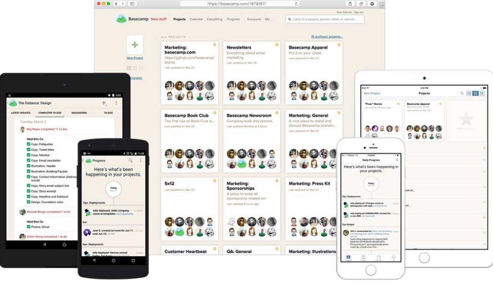

How to Choose the Best Project Management Tool If You Are a Millennial?
The role of project management is becoming more and more relevant no matter in which area or industry it is implemented. In fact, it balances all project processes and steps and helps project teams meet their goals and objectives.
Project management helps to reach goals faster, cheaper and avoid risks thereby contributing greatly to business strategy execution. More companies cannot imagine their performance success without project management as one of the key business competencies. Since this competence is actively developing, professional project management software is also evolving with it in the same way.
The core destination of professional PM tools is to ensure the success of any project and make even the most challenging managing process easier and efficient.
In this post, you’ll find a brief but valid review of powerful features that make modern project management software unrivaled and unstoppable power in project managers’ arsenal.
A new generation of project management
Project management is changing and evolving like any business discipline. A new millennial-generation requires the adaptation of innovations and the revision of well-established principles and concepts. Look, at least, on remote working. Was it so popular a decade ago?
To keep up with generation Y, the software developers are also doing their best to be trendy and relevant.
The power of professional PM software
Business reality makes us admit that professional project management software adoption is gradually changing.
In the 2017-2018 period, the percentage of companies using spreadsheets for managing Agile projects dropped from 74% to 67%. Instead, they successfully moved to specialized project management tools.
There is great research , demonstrating that the top 7 most used and requested features in project management software are file sharing, time tracking, email integration, Gantt Charts, budget management, custom reports, and cloud storage integration.
The role of a project manager as a professional is also becoming crucial for modern organizations. According to the latest statistics , 80% of high-performing projects are led by a certified project manager. That's why more and more new opportunities to get a professional PM certificate is existing.
What project management software to choose?
Defining the best project management tool for your needs, it's worth to pay attention to the latest project management trends that reflect actual business reality. Among all of them, let's outline 5 most important:
- The increasing complexity of projects. Project managers who may present complex processes to their customers in a simple way will be able to create great strategies for project promotion.
- Continuous popularity of Agile methods. Powerful Agile techniques are gaining stream and becoming standards for many companies in various areas.
- Convenient Kanban boards as one of the most effective way to visualize and track projects. They are increasingly being integrated into more structured project management. Applying Kanban allows project managers to embrace innovations to manage their projects and offers a place to manage tasks, to-do lists, and files.
- The factor of integration of project management software. PM tools continue to become simpler to use and more integrated with other services and this trend is actively supported by PM platforms' developers.
- The growth of remote teams and remote project management. Many employers have already recognized a higher degree of teams' satisfaction, reduced logistical and administrative overheads, reduction in sick time, and many more benefits.
Does an ideal PM software exist? It depends on your requirements. You may identify the best tool for your needs only comparison plenty of them. Here I gather the most useful and powerful set of features that should be useful in modern project management. You will also find some relevant examples of popular platforms. So, these powerful functions are Kanban boards, to-do lists, milestones, prioritization, collaboration, and time tracking feature.
Kanban boards
Project workflow describes all procedures that are involved in completing tasks. It's about the defined sequence of project steps required to produce results.
Applying the defined workflow, we can structure projects and get a well-visualized system. The workflow includes actors, activities, results, and state. All these are perfectly managed with the help of smart project management software.
Workflow tools are helpful in tracking tasks and projects as they move through all processes stages. Kanban boards and cards are often used for these aims and Hygger is one of the best Kanban board tools for project managers.
In Hygger, users may easily create and manage convenient boards for any kind of process. The platform proposes a great set of functionality at the card level (commenting, file attachments, assigning collaborators, etc.). The most typical columns that users apply are To do, In Progress and Done. However, you are free to name them as you wish.
If you need to limit the number of current tasks, you may use Work in progress limits option available in Hygger and also apply horizontal columns, Swimlanes. It seems appropriate for Millenials as, being always in multitasks reality, they may clearly maintain a product backlog and use one of the built-in prioritization frameworks that help to prioritize and order ideas and tasks easily.
These and other great feature make the platform really competitive and helpful.
To-do lists
The value of to do lists should not be depreciated even if today we have many substitutions and innovative alternative options. To do lists is an extremely powerful feature that many project management tools offer.
They are one of the oldest and easiest ways of organizing the day or the project ahead. Project managers know how to do lists can do wonders and influence on productivity. They are helpful in setting goals, planning project deliverables, project steps scheduling, etc.
The function of listing and organizing information is well presented in Asana. The platform allows creating and managing tasks as well as sharing to-do lists with your team members.
Every to-do list looks like a separate project with tasks listed underneath the project hierarchy. It's possible to create sub-tasks here and define each task with a category tag for easy searching. Attaching files is also available. Moreover, the tool allows quick switching between to do lists, Kanban boards, and calendars for the same projects.

Roadmap and milestones
Project milestones are used to delineate important points in a project schedule. These points visualize the start and finish of projects and mark the completion of a major phase of work.
Actually, milestones can be used to note anything that has started or finished. They primarily used as a scheduling tool.
For managing project milestones, you need a powerful roadmap that is often visualized with the help of convenient Gantt diagrams.
These horizontal bars illustrate project completion dates, progress, milestones, and dependencies. While Kanban boards are best used at the task level, Gantt diagrams are better suited for managing at a zoomed-out level.
Wrike has powerful Gantt functionality and balances advanced project management features with an easy-to-use user interface. The tool allows project teams to assign work and collaborate over their projects, tracking time and project assets.
This platform is built with software development teams in mind and lets them extend the tool’s capabilities in custom ways.
Prioritization
Prioritizing project work may be a real challenge for project teams from various industries. When you do not prioritize work, you can damage all your team’s efforts and initiatives, and even drain team motivation.
Effective prioritization is like an art that's why more PM software pays attention to this crucial function.
If your product backlog needs global «cleaning» and optimization, you’ll definitely need powerful prioritization methodologies and frameworks to get things done quickly.
One of the tools that propose a functional prioritization matrix is ProductBoard. This matrix lets users visualize the value/effort (value/complexity) tradeoff across all features.
You may also find a great set of prioritization techniques in Hygger.io (Eisenhower matrix, Value vs Risk, Value vs Effort, ICE and RICE frameworks and the Weighted scoring model).
Collaboration
Team collaboration has always been an important part of any business and now it is becoming more critical as we continue to be more interconnected via online technologies. Improving team collaboration is a permanent goal for all types of companies.
Project management tools care about making their collaborating functionality throughout the world an easy process. Some of the famous project management tools have initially focused on team collaboration.
Basecamp is a vivid example. Basecamp message boards, native chats, and file sharing make the platform an excellent solution for collaboration with team members and customers.
The system combines communication, project management, digital asset management and basic payment options all in one place.
Time tracking
During a project course, various modifications to the activities and resources may happen. Tracking of time spent on different activities is crucial in many ways.
For project managers, it is important to understand and track the hours the resource is putting on different activities. The proper time entry allows project managers to see that the time is not exceeding the estimated time, and mitigate potential risks in advance. That's why this feature seems like the obvious one when choosing an appropriate PM software.
Mavenlink can be considered as a good example. it helps project managers to get the best out of their team. The system allows gaining an in-depth insight into the workings of the teams and the progress of their projects. Here you'll find complex, but informative reports and data outputs.
The time tracking feature helps to track team productivity, increase efficiency and minimize time waste. The platform also includes accounting features that allow tracking employee expenses, set budgets, and receive payments.
Takeaways
Well, all we see that project management world is becoming more and more complicated. The good news is that the evolution of popular PM tools is starting to be more interesting and exciting.
Choosing the best software, you have to take into consideration a lot of details and functional abilities. Just try many of them, compare and make sure you use the right tools.
Source habr.com